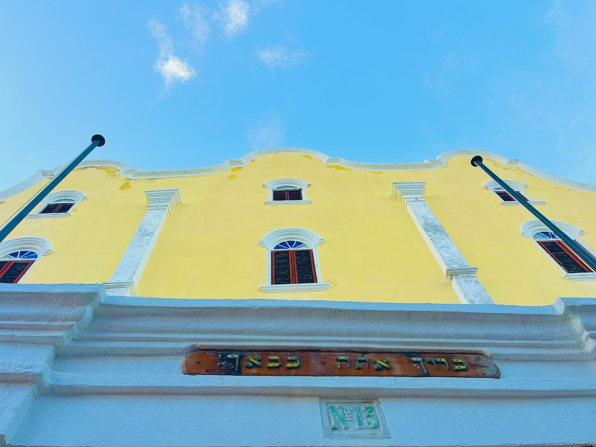
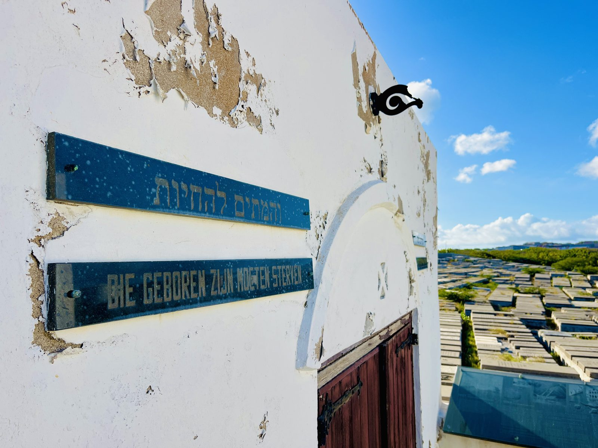
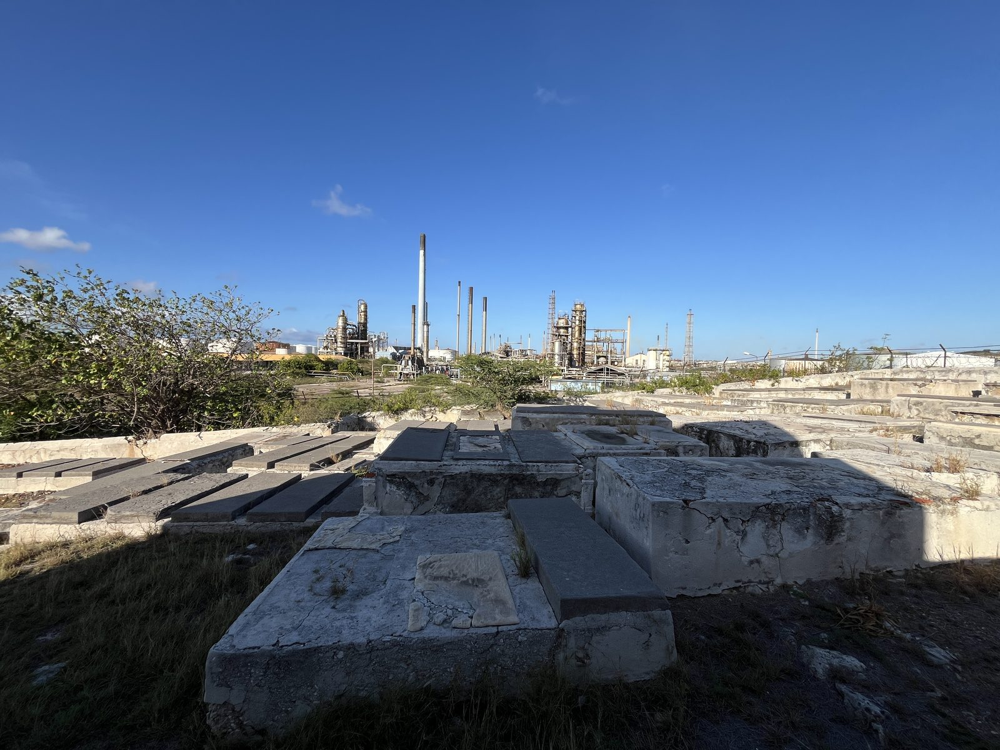

Een geschiedenisles · het hele verhaal
Een tropisch eiland in het hart van de Joodse geschiedenis
Op een drukkende middag in het centrum van Curaçao brengt het betreden van de binnenplaats van een synagoge uit 1732 een weldadig gevoel van rust en ontzag. Het geluid van verkeer, scheepshoorns en stadsleven vervaagt. De zilte bries luwt, het licht verzacht. De witte zandvloer in de synagoge dempt elke voetstap. Een veertiende-eeuwse Thora rust onder een zacht schijnsel en gloeit met stille trots.
Wat begint als een kort bezoek aan een historisch gebouw wordt iets veel diepers: het besef dat dit eiland, vaak teruggebracht tot clichébeelden van kleurige huizen en ongerepte stranden, een van de oudste en duurzaamste Joodse verhalen van het westelijk halfrond herbergt.
Het Joodse leven overleefde hier niet alleen; het bloeide, gaf vorm aan handelsroutes en zaaide grondleggende gemeenten door heel Amerika. Voor reizigers die betekenis zoeken voorbij het vertrouwde biedt Curaçao geen nostalgie, maar openbaring.
De Joodse aanwezigheid op het eiland komt zelden voor in gangbare toeristische verhalen, en toch is zij verweven met het ontwerp van de hoofdstad Willemstad, werelderfgoed van UNESCO. Wat Curaçao zo treffend maakt, is hoe naadloos het Joodse verhaal zich in het volle zicht verbergt. Het schuilt in straatnamen, familielijnen, koopmanshuizen gebouwd door Sefardische handelaren, en smeedijzeren hekken met Davidsterren. Zelfs het Papiaments, de lokale taal, draagt de sporen van het Portugees dat de Sefardim naar het eiland brachten.
Toch kan dit verhaal niet verteld worden zonder eerst de blik te verruimen naar de wereld die deze families achterlieten.

Op papier waren zij boeren, maar in hart en nieren kooplieden, en het eiland ging nooit werkelijk over de grond; het ging over de haven.
De vroegste hoofdstukken van deze aanwezigheid begonnen in het midden van de zeventiende eeuw, toen gevestigde Joden uit de Sefardische gemeenschap van Amsterdam de Atlantische Oceaan overstaken, aangetrokken door economische kansen. In 1630 nam de West-Indische Compagnie de Braziliaanse havenstad Recife in en veroverde daarna grote delen van het suikerrijke achterland. In het kielzog van deze nieuwe Nederlandse corridor trokken Sefardische Joden, beschermd door een betrekkelijk tolerante Nederlandse overheid, over de oceaan om een nieuw bestaan op te bouwen als kooplieden, financiers en kolonisten.
Het verhaal van Joods Curaçao begint met Samuel Cohen, die in 1634 met de vloot van de West-Indische Compagnie op het eiland aankwam toen Curaçao op Spanje werd veroverd. Cohen diende als tolk en geldt doorgaans als de eerste Jood die voet op het eiland zette. Kort daarna, in 1651, gaf de Compagnie een handvol Joodse families toestemming naar Curaçao te trekken om Plantage De Hoop te stichten en de gemeente Mikvé Israel te vormen. Zij kwamen aan met de instincten van een havenvolk: gebedenboeken in de hand en handelstalen op de tong.
Op papier waren zij boeren, maar in hart en nieren kooplieden, en het eiland ging nooit werkelijk over de grond; het ging over de haven. Toen de droge bodem moeilijk te bewerken bleek, wendden de kolonisten zich dan ook tot de vaardigheid die hun Atlantische netwerken mogelijk maakten, en maakten van Curaçao een handelsknooppunt tussen Europa, het Caribisch gebied en Zuid-Amerika.
Slechts drie jaar na Cohens aankomst op Curaçao heroverden de Portugezen de Braziliaanse havensteden op de Nederlanders. Joden werden bijna even snel verdreven als zij ooit waren uitgenodigd. De Nederlandse vlag ging neer, en daarmee de Nederlandse bescherming en religieuze tolerantie. Families die net hun gemeenschapsleven hadden herbouwd, moesten opnieuw vluchten: koffers gepakt, Thorarollen opgerold en passage geregeld naar waar dan ook. Zij verspreidden zich vooral naar Amsterdam en naar Franse of Nederlandse toevluchtsoorden in het Caribisch gebied, terwijl een kleine maar beroemde groep verder noordwaarts trok en Nieuw-Amsterdam bereikte (het huidige Lower Manhattan).
In 2026 viert Curaçao 375 jaar Joods leven op het eiland.
In 2026 viert Curaçao 375 jaar Joods leven op het eiland; de gemeente Shearith Israel in New York is slechts drie jaar jonger. Die band is meer dan chronologisch; hij is familiair. De 23 Sefardische vluchtelingen die het huidige Manhattan bereikten, stichtten de Mill Street Synagogue, later bekend als Congregation Shearith Israel, de oudste gemeente van Noord-Amerika.
Beide zustergemeenschappen ontstonden in Nederlandse koloniën, gedragen door dezelfde Amsterdamse Sefardische netwerken en gesterkt door dezelfde cyclus van ontheemding. De ene gemeente wortelde in een strategisch Caribisch vestingknooppunt, de andere in een ruwe grenshaven die al gonsde van handel en zou uitgroeien tot de uitgestrekte metropool en het grootste centrum van Joods leven buiten Israël. Lang voordat honderden synagogen Noord-Amerika bezaaiden, waren er deze twee beginpunten.
Elke verhuizing was een berekende gok op de lange termijn: dat er ergens in de Nieuwe Wereld een haven zou zijn waar Joods leven zonder angst geleefd kon worden.
Op Curaçao voegden latere golven Asjkenazische families nieuwe lagen aan dit verhaal toe. Op de vlucht voor vervolging in Oost- en Midden-Europa in de late negentiende en vroege twintigste eeuw brachten zij hun eigen melodieën, talen en rituelen mee, in een fijnzinnige dialoog met de diepgewortelde Sefardische gemeenschap van het eiland.
Er kwamen winkels, sociëteiten en nieuwe gemeenten, waaronder de Asjkenazisch-orthodoxe gemeente Shaarei Tsedek. Mettertijd weerspiegelde de gemeenschap de oude Joodse grap over een stadje dat twee synagogen nodig heeft: “één om in te bidden en één waar je nooit een voet zou zetten”. Vandaag echter, met nog maar zo'n tweehonderd Joden op het eiland, neigt de gemeenschap naar eenheid: men beweegt zich moeiteloos tussen beide gemeenten en deelt elkaars vieringen en mijlpalen.
Het onlangs uitgebreide Joods Museum Curaçao biedt wellicht het meest complete beeld van dit erfgoed. Gelegen naast de historische synagoge in de bedrijvige oude stad is het museum een dynamische ruimte die eeuwenoude voorwerpen combineert met eigentijdse en interactieve verhalen. In de zalen liggen handgeschreven manuscripten en rituele voorwerpen die oceanen en twee wereldoorlogen doorstonden, naast meeslepende exposities over de verweven geschiedenissen van migratie, religieus leven en culturele veerkracht.
Voor velen herschikt een bezoek aan Curaçao het verhaal van de Joodse diaspora; de vertrouwde ankers van de Asjkenazische immigratie vormen slechts een deel van het verhaal van het halfrond. Op dit kleine Caribische eiland verschijnt een andere lijn: gevormd door Sefardische kooplieden uit Amsterdam, Asjkenazische marskramers uit Oost-Europa, Afro- en Latijns-Caribische buren, en de culturele dwarsstromen die altijd door de havensteden van het Caribisch gebied zijn getrokken. Hier zijn al deze draden gevlochten tot een uniek Joods weefsel.

Dat is de stille kracht van Curaçao.
De Joodse gemeenschap van het eiland houdt stand dankzij een lange traditie van aanpassingsvermogen en gedeeld rentmeesterschap. Terwijl demografische verschuivingen het Joodse leven in het hele Caribisch gebied veranderen, blijft Curaçao een zeldzaam centrum van activiteit, gedragen door eilandbewoners, diasporafamilies en bezoekers. Voor historici is het eiland een onmisbaar referentiepunt geworden; de archieven en gemeenteregisters bieden samen een van de meest complete portretten van Sefardisch en Asjkenazisch leven in de Atlantische wereld, veelvuldig aangehaald in onderzoek naar handelsnetwerken, migratie en de vorming van de vroege Amerikaans-Joodse gemeenschappen. Vandaag worden er geregeld bar- en bat-mitswa's gevierd, werken internationale groepen met het Joods Museum samen aan tentoonstellingen en educatieve programma's, en keren families jaar na jaar terug naar een eiland dat een vormende rol speelde in het bredere Joodse verhaal.

In een regio waar veel Joodse gemeenschappen vooral nog in de herinnering voortbestaan, blijft Curaçao een plaats van praktijk: een museum dat nog zalen toevoegt, een Joodse kalender die nog wordt aangehouden, en een actief, inclusief en groeiend Chabad-huis. Dit verhaal, dat begon met handel en kansen, schrijft nog altijd zijn volgende hoofdstuk.